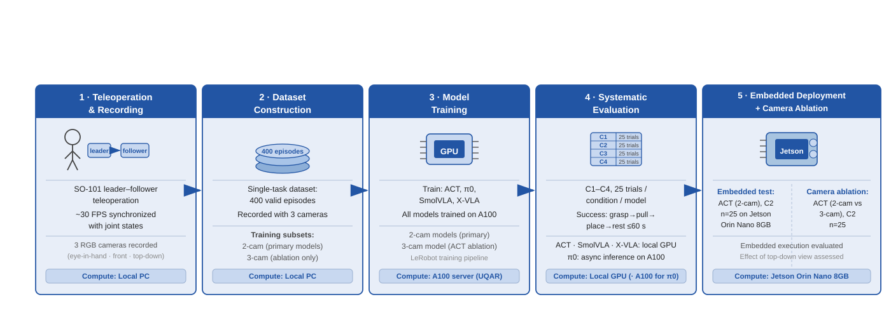
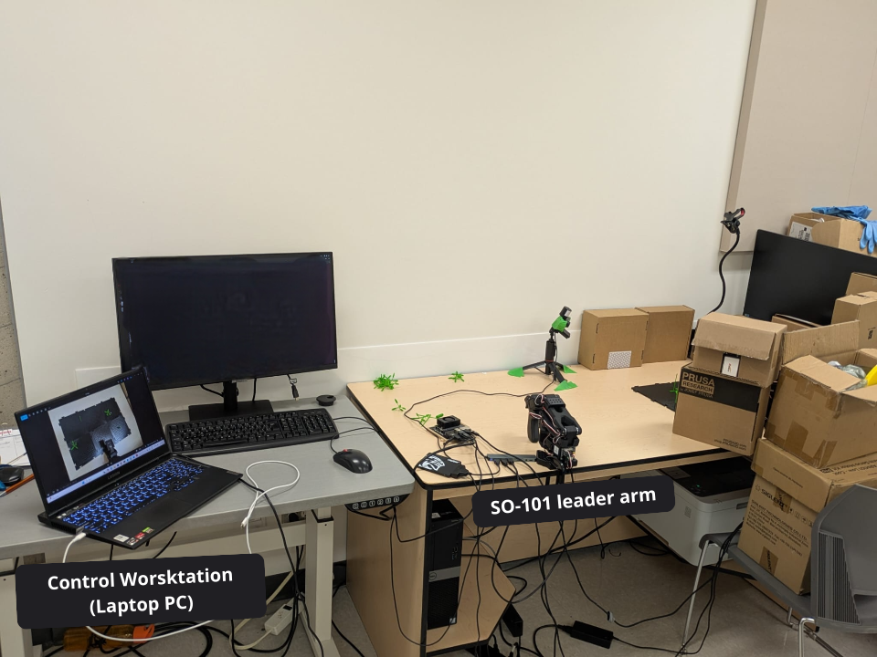
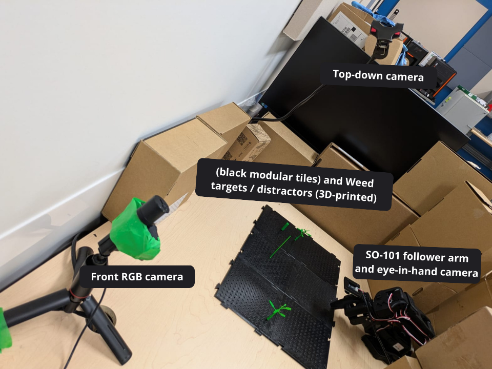
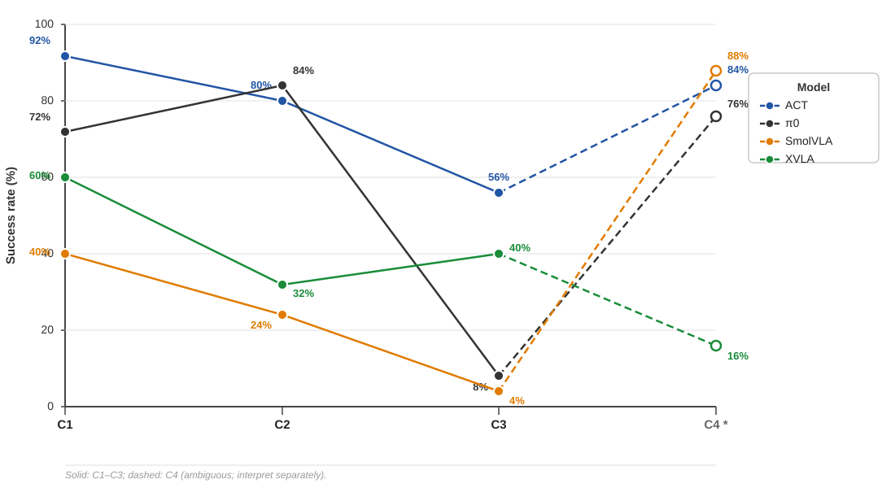

Compilation des 4 politiques évaluées — ACT, π₀, SmolVLA, X-VLA
Bras robotique SO-101 · 400 épisodes de téléopération · Conditions C1–C4 · Laboratoire UQAR Lévis, salle 2063
1Université du Québec à Rimouski (UQAR), Canada
★ Auteur principal · † Superviseur — Google Scholar
Modèles, Datasets et Résultats en Open Source. Explorez-les !
Ce travail présente une évaluation expérimentale comparative de quatre politiques d'apprentissage par démonstration appliquées à une tâche d'arrachage robotisé d'adventices en environnement contrôlé : une politique visuomotrice (ACT) et trois modèles Vision-Langage-Action (π₀, SmolVLA, X-VLA). Un jeu de données de 400 épisodes a été collecté par téléopération sur un bras SO-101 à six degrés de liberté, avec des adventices et distracteurs imprimés en 3D. Quatre conditions de difficulté croissante ont été définies (C1–C4). Chaque modèle a été évalué sur 100 essais (25 par condition) selon un critère de succès strict.
| Élément | Détail | Valeur |
|---|---|---|
| Robot | SO-101 follower + leader (téléopération) | 6 DDL |
| Herbes & distracteurs | Répliques imprimées en 3D (environnement contrôlé) | 3D-printed |
| Dataset | Épisodes d'entraînement valides collectés par téléopération | 400 épisodes |
| Caméras | Eye-in-hand + Front (config. principale) · Top-down (ablation) | 30 FPS |
| Plan d'expérience | 4 modèles × 4 conditions × 25 essais + ablation + Jetson | 450 tests |
| Plateformes | Desktop GPU · Serveur A100 UQAR (π₀) · Jetson Orin Nano 8 GB | 30 Hz |
| Budget temporel | Durée maximale par essai | 60 secondes |

Figure 1 — Schéma synoptique du workflow expérimental.

(a) Wide view of the control workstation and SO-101 leader arm.

(b) Close-up of the workspace (black tiles), SO-101 follower arm and cameras.
Figure 2 — Experimental setup used for teleoperated data collection and evaluation: (a) control workstation and SO-101 leader arm; (b) workspace with black modular tiles, 3D-printed targets/distractors, SO-101 follower arm and cameras.
| Code | Intitulé | Description | Difficulté |
|---|---|---|---|
| C1 | Herbe seule | Une seule herbe cible, positions variées, aucun distracteur | 🟢 Faible |
| C2 | Herbe + Distracteurs | Une herbe cible + distracteurs, positions variées | 🟡 Modérée |
| C3 | Plusieurs herbes ± distracteurs | Plusieurs herbes présentes, une seule cible désignée | 🟠 Élevée |
| C4* | Herbes couchées et/ou distracteurs seuls | Herbes couchées (orientation inédite) et/ou uniquement des distracteurs. Le démonstrateur restait immobile — comportement appris depuis les démonstrations. | 🔴 Difficile |
* C4 : comportement immobile appris. SmolVLA / ACT / π₀ : robot immobile = codé succès. X-VLA : tente d'agir mais cible les distracteurs ronds.
| Modèle | C1 — Herbe seule | C2 — + Distracteurs | C3 — Plusieurs herbes | C4* — Herbes couchées | Global / 100 |
|---|---|---|---|---|---|
| ACT | 23/25 · 92% | 20/25 · 80% | 14/25 · 56% | 21/25 · 84% | 78 / 100 · 78% |
| π₀ | 18/25 · 72% | 21/25 · 84% | 2/25 · 8% | 19/25 · 76% | 60 / 100 · 60% |
| SmolVLA | 10/25 · 40% | 6/25 · 24% | 1/25 · 4% | 22/25 · 88% | 39 / 100 · 39% |
| X-VLA | 15/25 · 60% | 8/25 · 32% | 10/25 · 40% | 4/25 · 16% | 37 / 100 · 37% |

Figure 9 — Profils de dégradation des performances selon la complexité croissante (C1 → C2 → C3). Les courbes représentent le taux de succès (%) pour chaque modèle.
Trois configurations comparées sur la condition C2 (25 essais chacune).
| Modèle | Type | Steps | Batch | Durée | HuggingFace |
|---|---|---|---|---|---|
| ACT (2 cams) | Visuomoteur BC + chunking | 100 000 | 8 | 2h 07 min | 🤗 Voir |
| ACT (3 cams — ablation) | Visuomoteur BC + chunking | 100 000 | 8 | 4h 28 min | 🤗 Voir |
| π₀ | VLA Flow matching (PaliGemma) | 15 000 retenus* | 32 | 1j 15h 14 min | 🤗 Voir |
| SmolVLA | VLA compact Flow matching | 15 000 retenus* | 64 | 4h 57 min | 🤗 Voir |
| X-VLA | VLA Soft prompts inter-embodiment** | 15 000 | 32 | 2h 50 min | 🤗 Voir |
* π₀ et SmolVLA : 30 000 steps entraînés, checkpoint à 15 000 retenu (meilleur taux de succès en rollout). lr = 2,5e-5 (π₀), weight_decay = 0,01, dtype = bfloat16.
** X-VLA : freeze_vision_encoder = true, freeze_language_encoder = true, train_policy_transformer = true, train_soft_prompts = true, action_mode = auto.
| Document | Essais | Zenodo |
|---|---|---|
| ACT — C1 à C4 | 100 essais | |
| π₀ — C1 à C4 | 100 essais | |
| SmolVLA — C1 à C4 | 100 essais | |
| X-VLA — C1 à C4 | 100 essais | |
| ACT — Ablation 3 caméras / C2 | 25 essais | |
| ACT — Jetson Orin Nano / C2 | 25 essais |
Datasets et modèles sur HuggingFace (kagyvro48). Tables de collecte et scènes sur Zenodo. Scènes expérimentales : DOI:10.5281/zenodo.18942142.
Article en cours de rédaction pour soumission (cible : revue Q1/Q2, ex. Computers and Electronics in Agriculture).
@article{kagambega2026weeding,
title = {\'Evaluation exp\'erimentale comparative de politiques
d'apprentissage par d\'emonstration pour le d\'esherbage
robotis\'e par arrachage m\'ecanique en environnement
contr\^ol\'e},
author = {Kagambega, Yve-Roland and Adda, Mehdi},
journal = {En cours de soumission},
institution = {Universit\'e du Qu\'ebec \`a Rimouski (UQAR), Canada},
year = {2026}
}
Ce travail a été réalisé au laboratoire de robotique de l'Université du Québec à Rimouski (UQAR), Campus de Lévis, salle 2063. Nous remercions l'équipe de l'UQAR pour l'accès aux équipements et au serveur A100, ainsi que les contributeurs du projet LeRobot (Hugging Face) pour les outils open-source.